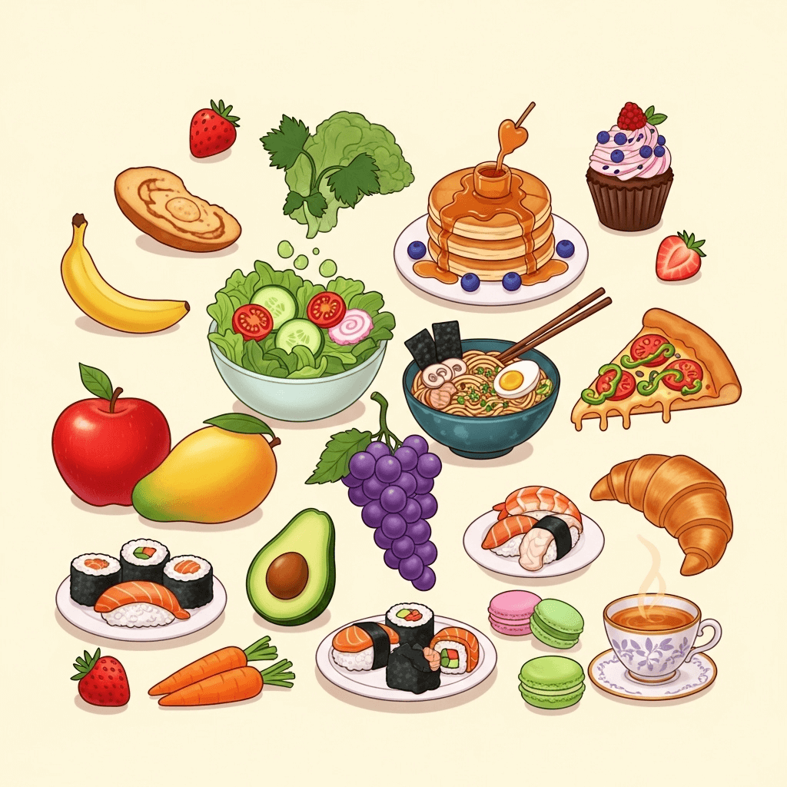

A Random Food Generator is a free online tool that helps you instantly decide what to eat by giving you meal ideas in one click. MyGenTool's version offers 600 curated options across breakfast, lunch, and dinner, complete with detailed ingredient lists (with quantities), cooking instructions, and nutrition facts. It's perfect for busy individuals, families looking to share mealtime without the stress of deciding, or anyone wanting to bring more variety and joy to their table, turning everyday dining into an easy, inspiring experience.
üçï Random Food Generator & Dinner Idea Picker
Use our free Random Food Generator to decide what to eat today. Get instant dinner ideas, meal suggestions, recipes, and random dishes with nutrition details—perfect as your online food randomizer and dinner decider.
▼
▼
What is the Random Food Generator?
How to Use the Random Food Generator
1. Select Your Meal Type
Choose whether you want breakfast, lunch, dinner, or let the tool surprise you with a random pick.
2. Set Your Dietary Preference
Pick Vegetarian, Non-Vegetarian, or Random to match your taste and lifestyle.
3. Click "Generate Food"
With one click, you'll get a curated meal idea from our 600 carefully selected options—complete with ingredients, exact quantities, cooking instructions, and nutrition facts.
4. Cook or Explore More
Use the suggestion to plan your next meal, or click again to discover more dishes until you find the perfect one.

Key Features of MyGenTool Random Food Generator

600 Curated Meal Ideas
Break free from repetitive menus with a handpicked collection of 600 breakfast, lunch, and dinner ideas. From comforting classics to bold international flavors, every suggestion is crafted to spark inspiration and bring variety to your table.
Detailed Ingredients with Exact Quantities
Each recommendation includes a precise ingredient list with accurate measurements, making shopping and cooking effortless. No more guessing—just follow the quantities to save time, reduce waste, and cook with confidence.
Accurate Nutrition Information
Every meal idea comes with complete nutritional data, including calories, protein, fats, and carbohydrates. Plan your meals with confidence, knowing they align with your health goals and lifestyle.
Step-by-Step Cooking Instructions
Clear, beginner-friendly instructions guide you through each dish from start to finish. Whether you're a casual cook or a home chef, you'll get consistent, delicious results every time.

Frequently Asked Questions
How does the Random Food Generator work?
▼Our Random Food Generator uses a curated database of 600 carefully selected meals. Simply choose your meal type and dietary preference, then click "Generate Food" to get an instant recommendation with detailed ingredients, cooking instructions, and nutrition information.
Are the recipes suitable for beginners?
▼Yes! All recipes include step-by-step instructions with exact quantities and cooking times. Whether you're a complete beginner or an experienced cook, you'll find clear, easy-to-follow directions that ensure delicious results every time.
Can I filter by dietary restrictions?
▼Absolutely! You can choose between Vegetarian, Non-Vegetarian, or Random options. Our database includes a wide variety of dietary preferences to ensure everyone can find suitable meal ideas.
Is the nutrition information accurate?
▼Yes, all nutrition information is carefully calculated based on standard serving sizes and ingredient quantities. This helps you make informed decisions about your meals and maintain your health goals.
Ready to Discover Your Next Favorite Meal?
Join thousands of users who have found their perfect meal with our Random Food Generator. Start exploring today!